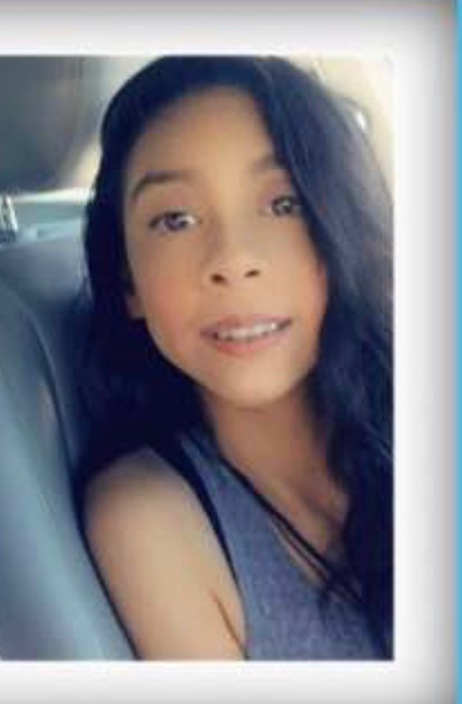

|  |
To begin with, my name is Desiree Montemayor, I am a senior in Palm Desert High School. Furthermore, this year I decided to challenge myself with some challenging classes. For Instance, this is my first year taking computer science and this is not a typical class that I would prefer to request but I figured that this class is a great opportunity to learn something that will further my future education. Not to mention, that I am looking forward to learning as much as this class has to offer. Additionally, I am also taking a spanish class and just because Iḿ hispanic does not mean I know the language because letś be honest I don't. Therefore, I can say my spanish class has been very interesting and demanding but I cannot complain because it is a learning process. Lastly, I decided to continue with my Health Academy class because I wanted to gain more knowledge in that area which means more options of opportunities for my future. Above all, I'm excited for this year because next year I get to experience the real world of adulthood and having my own responsibility with college and real life work. Moreover,things to know about my persona is that I follow my heart. For example, in the area that I am passionate about I do not let fear hold me back because I do not want to spend the rest of my life with the words what if. Additionally, I believe in myself If I fail I will get right back up and keep on trying until I get it right. Furthermore, I treat others the way I want to be treated. For instance, I talk to people the way I want to be spoken to; respect people as I wish to be respected. Not to mention, that I look for positivity on all things. In other words, your mind is powerful, and when you fill it with positivity your life naturally becomes positive. Moreover, I am a tough person who has made it through tough times. When times are tough, anyone can run away, but facing problems and working through them makes one stronger. Above all, I am a responsible person. For one thing, I do not blame others or make excuses. I believe the key to success is having discipline and taking responsibility for one's actions. In conclusion, I am a seventeen year old high school girl who has a lot of dreams and future goals. In addition, growing up in a single mothers environment has taught me a lot it has taught me that life is not easy and that one needs to be determined to survive in this world. Therefore, I was constantly reminded that knowledge is the key to success and survival that is why I carry so much momentum in learning as much as I can and not to let anyone deter me from what for my future. |